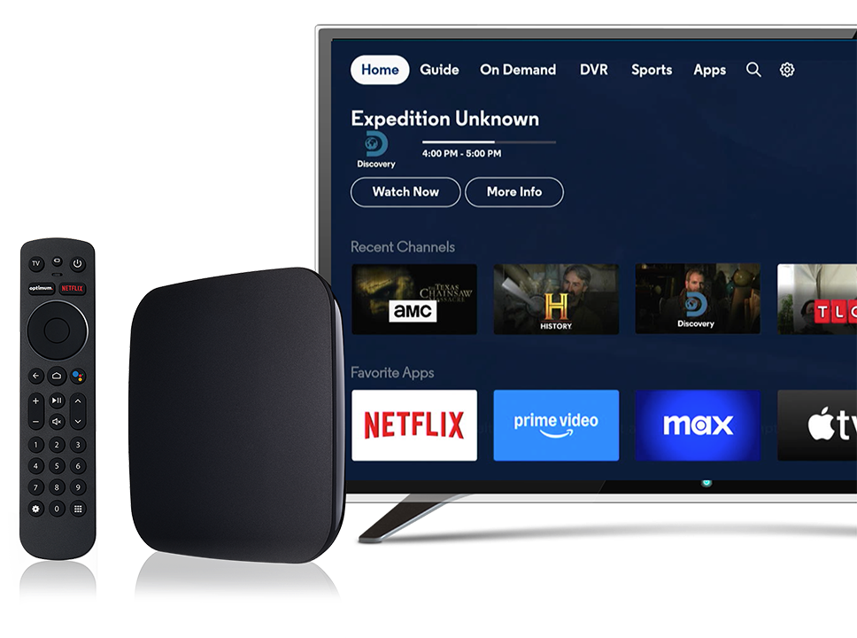
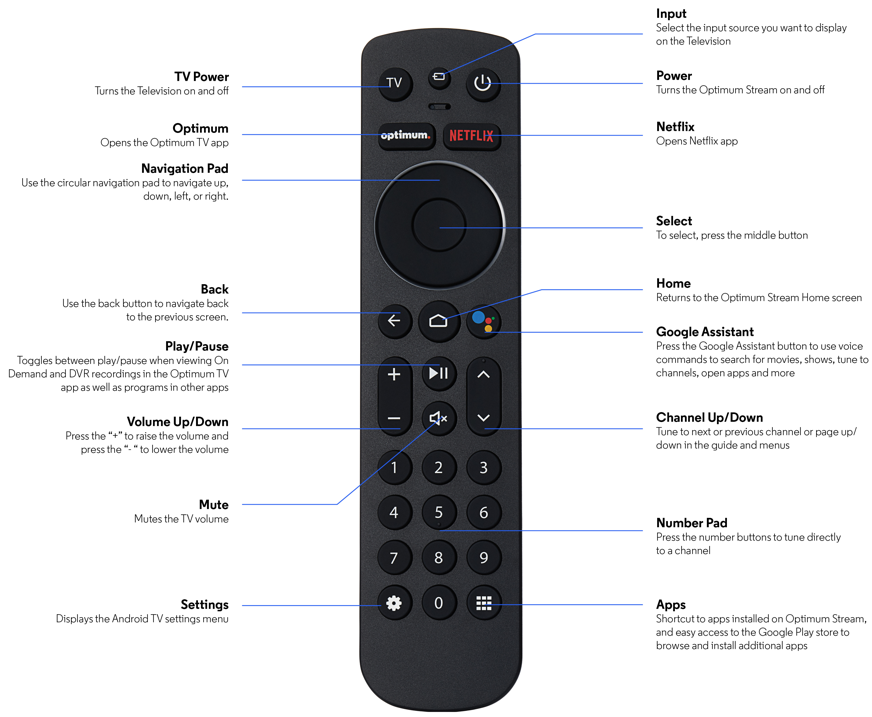

Remote Pairing Assistant
A simple step-by-step guide to pair your Optimum Stream remote with your TV.
Step 1
Prepare Your Remote
- Turn on your TV
- Remove the back cover of your remote
- Insert two AAA batteries following the (+/-) markings
- Replace the back cover until it clicks

Step 2
Power Up
- Position your Stream box where the remote can point directly at it
- Press the Power button (top-right) on your remote
- Wait for the Stream box to Boot up
- Press the Home button (below navigation pad)

Step 3
Access Settings
- Find the Settings icon (gear/cog symbol) on screen
- Use the navigation pad to highlight Settings
- Press the Select button (center of pad)
- Navigate to "Device & Remote Settings"
Step 4
Pair Remote
- Select "Remotes & Accessories"
- Choose "Add Stream Remote"
- Point remote at the Stream box
- Press and hold Select + Mute buttons
- Release when the remote light blinks
Step 5
Configure TV Control
- Return to "Device & Remote Settings"
- Select "Stream Remote"
- Choose "Change TV Setup"
- Test Volume Up/Down buttons
- Select "Yes" if volume changes
- If no response, select "No" and pick your TV brand
Thank You!
Your remote is now set up and ready to use.